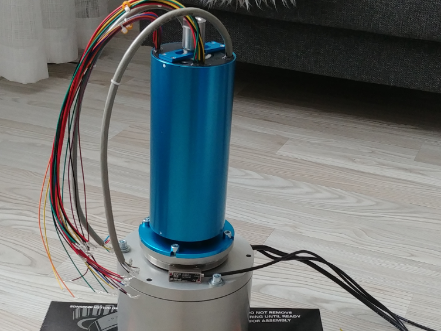

SähköpneumaattinenSCARA Nivel
Ryhmäprojekti, Kevät 2020
Kokoonpanorobotit ovat nykyisin teollisuudessa hyvin suosittuja, ja onkin osoitettu käytännössä kuinka robotit voivat parantaa kokoonpanon tarkkuutta, vähentää kokoonpanoaikaa ja tarjota kustannussäästöjä. SCARA (Selective Compliance Assembly Robot Arm) -tyyppiset robotit ovat vuosia olleet yleisesti teollisuuden käytössä mekaanisten ja elektronisten komponenttien ja laitteiden kokoonpanossa tehdasolosuhteissa. SCARA-robotit ovat yleensä ulkoisesti johdotettuja, jolloin käyttöjännite, signaalijohdot ja pneumatiikkajohdot sijaitsevat robotin käsivarsien ulkopuolella. Syynä tähän on robottien valmistus- ja kokoonpanokustannukset; johtojen vienti robotin nivelissä sijaitsevien moottoreiden akselien läpi on huomattavasti monimutkaisempaa ja vaatii erityisiä lisäosia, kuten liukurenkaita. Sisäisellä johdotuksella kuitenkin saataisiin näistä roboteista paremmin toimivia ja johdot suojattua paremmin ympäristöltä ja mekaaniselta rasitukselta
Projektin lähtökohtana oli suunnitella asiakasyrityksen tarpeisiin soveltuva SCARA-robotin olkanivelen vääntömoottorin kotelointi ja läpivientiratkaisu, jolla nivelen sisällä saataisiin kuljetettua muihin robotin osiin suuntaavat käyttöjännitteet, signaalit ja paineilmat. Toiveena oli myös, että nivel pystyy pyörimään vapaasti ympäri sekä pikaliikkeessä että hitaammassa liikkeessä. Tätä ratkaisua sovellettaisiin myöhemmässä vaiheessa robotin kyynär- ja ranneniveliin prototyyppivaiheen jälkeen. Tehtävässä tuli onnistua ilman minkäänlaisia ulkoisia johtoja tai kanavia. Heti alkuun oli selvää, että tässä onnistuminen vaatii sähköpneumaattisen liukurenkaan: joko omavalmisteisen tai valmiskomponentin. Sähkön ja paineilman välittäminen ei onnistu pyörivässä akselissa ilman liukurengasta.
Oman komponentin valmistusta sekä valmiskomponenttien tilaamista ja sovittamista haluttuihin vääntömoottoreihin ja enkoodereihin alettiin selvittämään heti projektin alussa. Molemmista saatiin tehtyä varteenotettavat esisuunnitelmat, ja vaikka oman liukurengasratkaisun kehittäminen oli kiinnostavin ja haastavin vaihtoehto, päädyimme kehittämään valmiskomponentteihin perustuvaa ratkaisua asiakkaan halusta saada koteloinnista varmasti toimiva ja helposti huollettava.
Sähköpneumaattinen liukurengas päätettiin hankkia Senringiltä, jolta sai helposti kustomoitavan ratkaisun riippuen käyttöjännitekaapeleiden, signaalikaapeleiden ja pneumatiikkajohtojen lukumäärästä. Tämä kuitenkin toi kokoonpanon suunnitteluun aivan uuden haasteen: nivelen korkeus. SCARA-robotin nivelen tulisi olla mahdollisimman matala, sillä nivelen korkeus tuo suunnitteluteknisiä ongelmia ja vaikuttaa osaltaan myös robotin käsivarren paksuuteen. Moottorikoteloinnin päälle sijoittuva liukurengas ei välitä mitään voimia, mutta sen korkeus aiheuttaa sen, että moottorikoteloinnin korkeudesta on pystyttävä tinkimään kokonaiskorkeuden rajoittamiseksi. Valitsemamme Senring -liukurengas oli korkeudeltaan 192 mm, joten painetta koteloinnin tiivistämiseksi oli reilusti.
Usean suunnittelukierroksen jälkeen koteloinnin korkeus saatiin supistettua 144 millimetriin, joka oli hyvä saavutus ottaen huomioon vääntömoottorin 130 mm halkaisija. Vääntömoottorin lisäksi pakettiin piti mahduttaa enkooderi, kaksi kartiorullalaakeria sekä kolme kiinnityslaippaa.
Koronavirustilanteen takia prototyypin valmistaminen viivästyi merkittävisti, sillä osien toimitusajat pitenivät ja kohtuuhintaisen koneistuksen löytäminen Suomessa oli melkein mahdotonta. Prototyypin testaus ei ollut mahdollista, mutta paperilla asiat kuitenkin näyttivät erittäin hyvältä ja prototyyppi saatiin kasattua ennen kesää. Mikäli prototyypin testaus olisi onnistunut, olisi ollut mahdollista ruveta kehittämään kyynär- ja ranneniveliin samanlaisia ratkaisuja, ja lopuksi saada suunniteltua täysin toimiva SCARA-robotti, josta ei roiku ylimääräisiä johtoja.